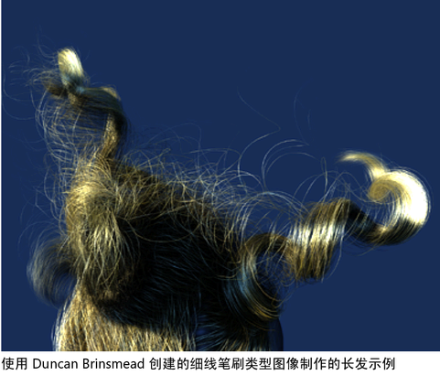
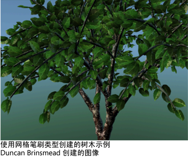
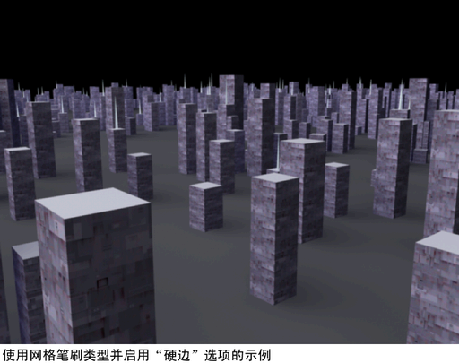
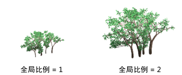

通过以下方法之一打开此窗口：
- 在“建模”(Modeling)菜单集中，选择。
- 在“PaintEffects”工具架中，单击“模板笔刷设置”(Template Brush Settings)
 。
。
- 在面板中，单击工具栏上的“编辑模板笔刷”(Edit Template Brush)
 。
。
- 在图形中选择笔刷笔划，然后在“属性编辑器”(Attribute Editor)中选择相关的笔刷节点。
- 使用 Ctrl-b（Windows 和 Linux）或 Control-b (Mac OS X) 热键组合。
本主题中介绍的所有设置也会显示在任何笔刷节点的属性编辑器中。
笔刷类型(Brush Type)
选择要使用其进行绘制的笔刷的类型。所有笔刷类型使用由笔刷属性定义的形状。
- 绘制(Paint)
-
根据定义的属性将绘制应用于笔划路径。
- 涂抹(Smear)
-
扭曲已应用于画布或场景的绘制。如果笔划使用伪阴影（请参见阴影效果(Shadow Effects)笔刷设置中的伪阴影(Fake Shadow)），则阴影也将涂抹。
- 模糊(Blur)
-
软化已应用于画布或场景的绘制的外观。如果笔划使用伪阴影（请参见阴影效果(Shadow Effects)笔刷设置中的伪阴影(Fake Shadow)），则阴影也将模糊。
- 擦除(Erase)
-
在画布中，“擦除”(Erase)笔刷将移除绘制的像素中的颜色，显示基础画布“清除颜色”(Clear Color)并保持笔刷的形状。有关详细信息，请参见从画布中擦除绘图。
在场景绘制视图中，“擦除”(Erase)笔刷将替换绘制图章的与黑色重叠的像素颜色 (Alpha 0)。
进行擦除时，Alpha 值将减小（而不增大），这表示您可以使用“擦除”(Erase)笔刷擦除纹理或场景中的洞。
- 细线(ThinLine)
-
与“绘制”(Paint)笔刷类型相比，笔刷的“细线”(ThinLine)类型允许您更快速地渲染大量精细管。该类型使用直接抗锯齿线绘制，而不是一系列笔刷图章。使用“细线”(ThinLine)笔刷类型时，也可以使用“多条纹”(Multi Streaks)方法。当与“多条纹”(Multi Streaks)方法结合使用时，“细线”(ThinLine)笔刷类型对头发的速度比“绘制”(Paint)笔刷类型要快 100 倍，并能够显示更加理想的线细节。此外，使用“多条纹”(Multi Streaks)还可以生成新外观，例如成束的湿头发。
注： 当在“细线”(ThinLine)笔刷类型下使用较大的“管宽度”(Tube Width)值时，可能会导致出现瑕疵。 - 网格(Mesh)
-
使用三角化的管（而不是笔刷图章）渲染“Paint Effects”。这将产生精确的圆锥形几何体，该几何体带有在曲面上正确映射的纹理。与使用“绘制”(Paint)“笔刷类型”(Brush Type)时相比，会更加精确地渲染平面。“绘制笔刷类型”(Paint Brush Type)通常更适于表示软、模糊的体积，而“网格笔刷类型”(Mesh Brush Type)更适于表示硬曲面。
使用“网格笔刷类型”(Mesh Brush Type)，您可以创建无论从远距离还是近距离都效果良好的“Paint Effects”树和植物。您也可以创建形状，如轮廓鲜明的几何体（建筑），以及对网格进行每像素照明（包括镜面反射高光）。笔刷上还有一个内置环境贴图，它在模拟反射曲面时非常有用（请参见网格环境反射(Mesh Environment Reflections)笔刷设置）。三角形置换和凹凸贴图可增强网格曲面的细节（请参见纹理(Texturing)笔刷设置）。三角形不会保存在内存中，而是在渲染时生成。因此，可以使用许多三角形，而不会耗尽内存。
通过将管表示为三角形而可能实现的另一个功能是“Paint Effects 到多边形”(Paint Effects to polygons)的转化。有关详细信息，请参见将 Paint Effects 转化为几何体。

- 全局比例(Global Scale)
-
使用“全局比例”(Global Scale)设置可按公用因子调整笔刷属性值。这样会均匀地缩放绘制效果，以便可以绘制相同的效果，但使用不同的大小。

其他 Paint Effects 笔刷设置
以下主题介绍“Paint Effects 笔刷设置”(Paint Effects Brush Settings)窗口的各个区域和子区域中可用的设置。